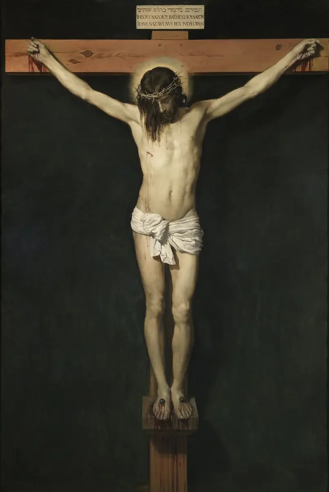
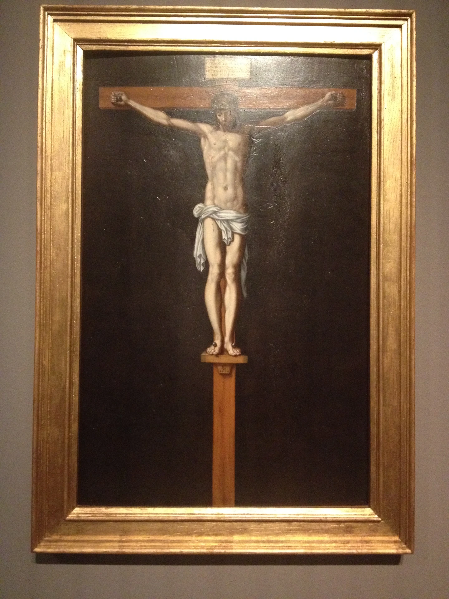
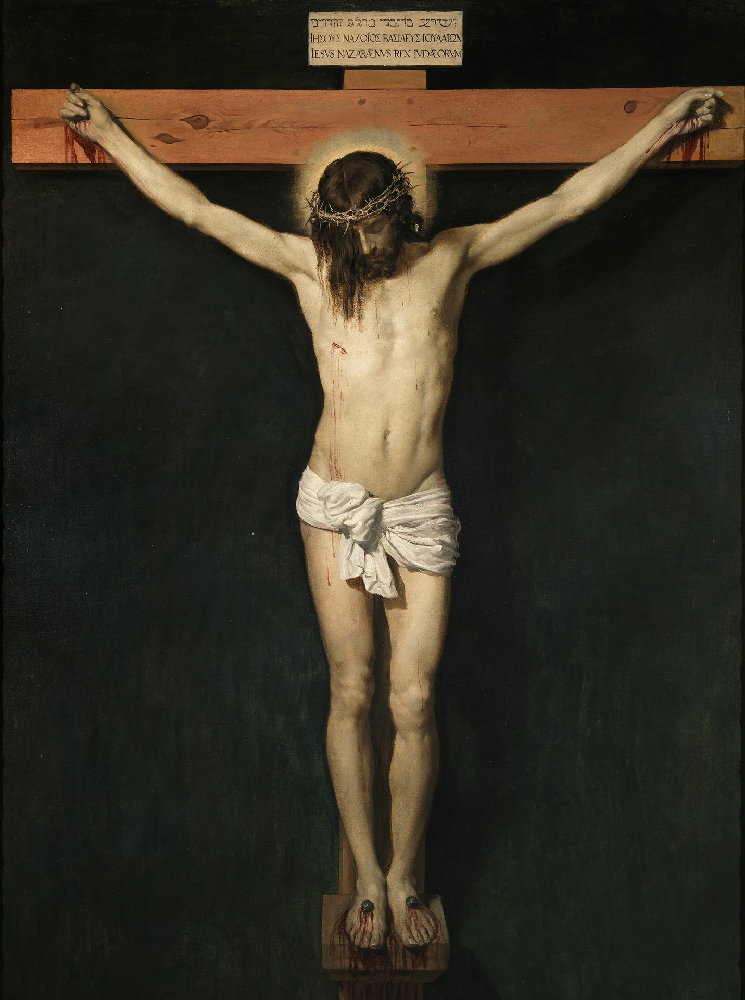
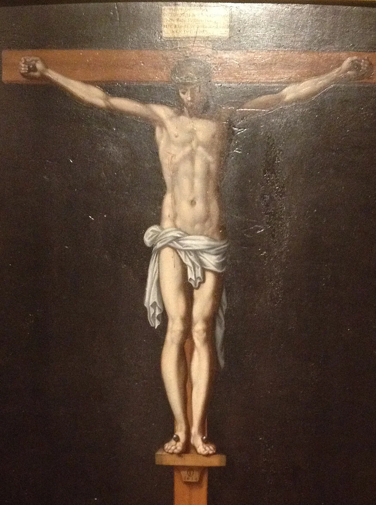
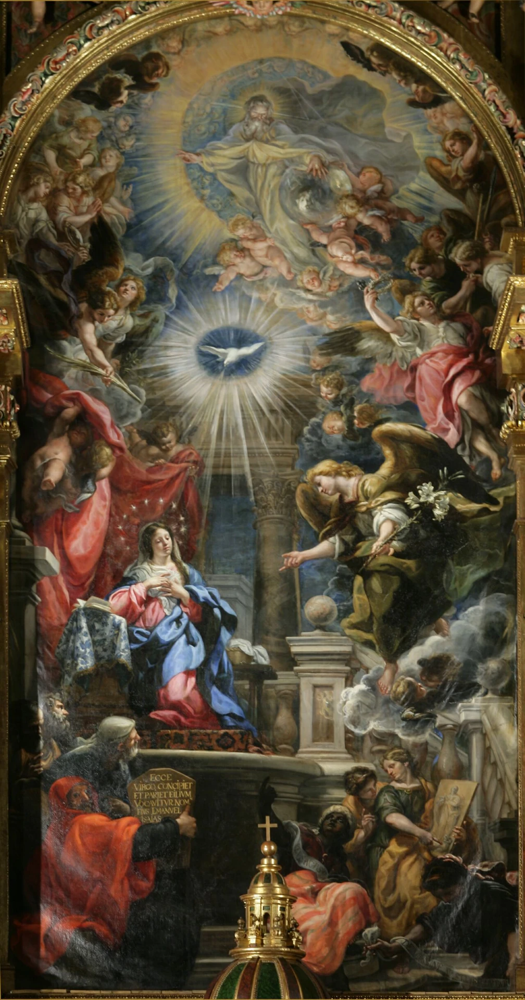
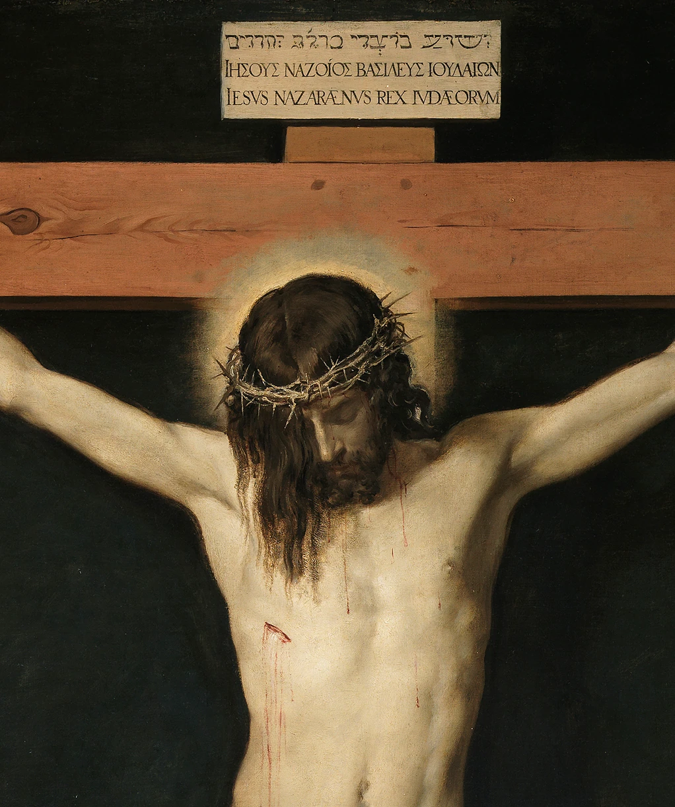

아직 펼치지 않은 카드빛과 어둠 사이의 얼굴 · 3벨라스케스 「십자가의 그리스도」배경도 사람도 없이, 어둠 속에 십자가 하나만 그린 그림이에요. 화가는 왜 이렇게 고요하게 그렸을까요?깜깜한 배경에 십자가만 그린 그림이야.
1632년 무렵스페인 마드리드 · 지금은 프라도 미술관
벨라스케스 「십자가의 그리스도」
1632년 무렵 마드리드에서, 벨라스케스(Velázquez)는 어둠 속에 홀로 달린 그리스도를 그렸어요. 못 네 개와 나란히 놓인 두 발은, 열한두 살에 들어간 스승 파체코의 화실에서 배운 그대로예요. 스승의 그림과 제자의 그림을 겹쳐 놓고, 손잡이를 밀어 같은 점과 다른 점을 찾아보세요.
벨라스케스는 어릴 때 파체코 선생님에게 그림을 배웠어. 선생님 그림과 제자 그림을 겹쳐 볼 수 있대. 무엇이 같고 무엇이 다를까?
검수 전 시안이에요(기준서 1판). 두 그림을 겹쳐 보는 장면은 이 안내서가 가로대와 발판 높이를 맞춰 잘라 붙였어요. 상상은 ‘눈 감고 상상해 보기’에만 썼어요.
시안 확인용카드 단계 미리 보기
1
세비야, 스승의 화실
벨라스케스(Diego Velázquez, 1599~1660)는 스페인 세비야에서 태어나, 1611년 화가 프란시스코 파체코(Francisco Pacheco)의 공방에 정식 견습생으로 들어갔어요. 1618년에는 스승의 딸과 결혼했어요.
프라도 미술관에 따르면 파체코는 1611년부터 그리스도를 못 네 개로 박힌 모습으로 그렸어요. 두 손에 하나씩, 그리고 두 발을 겹치지 않고 하나씩 박는 방식이에요. 사진의 그림은 파체코가 1614년에 그린 것으로, 지금 그라나다의 로드리게스아코스타 재단에 있어요.

1619년, 세비야의 시인 프란시스코 데 리오하는 파체코가 ‘옛 저술가들’의 가르침을 되살렸다며 축하하는 편지를 보냈어요(티센보르네미사 미술관 해설). 파체코는 1649년에 펴낸 책 『회화의 기술』 끝부분에서도 못 네 개가 맞다는 역사와 신앙의 근거를 여럿 들었어요(프라도).
벨라스케스는 열한두 살 때 파체코 선생님에게 그림을 배우기 시작했대. 이건 선생님이 그린 그림이야.
물어보기이 그림에서 못이 몇 개 보이는지 세어 볼까?
2
스승과 제자, 두 십자가
18년쯤 떨어진 두 그림을, 이 안내서가 가로대와 발판의 높이를 맞춰 겹쳐 놓았어요. 왼쪽이 스승 파체코의 1614년 그림, 오른쪽이 제자 벨라스케스의 1632년 무렵 그림이에요.
못 네 개, 작은 나무 발판 위에 나란히 놓인 두 발, 어두운 바탕, 머리 위 명패가 같아요. 크기를 맞추니 두 몸의 자세도 거의 그대로 겹쳐요.
가운데 손잡이를 밀어 스승의 그림과 제자의 그림을 겹쳐 보세요.


왼쪽 · 파체코, 1614년 — 이 안내서가 액자 안쪽을 잘라 벨라스케스 그림과 크기를 맞춤 · 그림: 프란시스코 파체코 · 사진: Marsupium · 퍼블릭 도메인 · 위키미디어 공용
오른쪽 · 벨라스케스, 1632년 무렵 — 발판 아래 기둥을 조금 잘라 냄 · 그림: 디에고 벨라스케스 · 퍼블릭 도메인 · 위키미디어 공용
스승의 그리스도는 얼굴이 보이고, 허리 천이 한쪽으로 무릎까지 늘어져요. 제자의 그리스도는 고개를 떨궈 머리카락이 얼굴을 반쯤 가리고, 머리 둘레에 희미한 빛이 있어요. 제자의 그림에는 손과 발과 옆구리에 붉은 피도 보여요.
프라도 미술관은 벨라스케스의 그리스도가 마치 달콤한 꿈을 꾸듯 십자가 위에서 몸을 가누고 있는 것처럼 보인다고 설명해요. 그러면서도 옆구리의 상처는 숨진 뒤에 생긴 것이라, 이미 숨을 거둔 모습이라고 덧붙여요(요한복음 19장 33~34절).
선생님 그림과 제자 그림을 겹쳤어. 손잡이를 밀어 봐! 몸 모양이 거의 똑같아.
물어보기두 그림에서 다른 곳은 어디야?
3
산 플라시도 수녀원
벨라스케스의 그리스도는 마드리드의 산 플라시도 수녀원을 위해 그려졌을 것으로 보여요. 프라도 미술관은, 1623년에 이 수녀원을 세운 아라곤 왕국의 고위 관리 헤로니모 데 비야누에바(Jerónimo de Villanueva)가 주문했을 수 있다고 적어요.
베네딕도회 수녀들의 이 수녀원은 지금 성당만 남아 있어요. 성당 중앙 제단에는 클라우디오 코에요(Claudio Coello)가 1668년에 그린 높이 7.5미터의 「수태고지」가 걸려 있어요. 사진은 이 그림이고, 벨라스케스의 그리스도는 지금 이곳에 없어요.

이 성당은 1943년 스페인의 역사·예술 기념물로 지정되었어요(마드리드 주 정부 문화재 자료).
이 그리스도 그림은 원래 수녀님들의 수녀원에 걸려 있었대. 지금 그 성당에는 다른 큰 그림이 있어.
물어보기사진 속 그림에서 날아오는 천사를 찾아볼까?
4
세 가지 말의 명패
머리 위 명패에는 세 줄 글씨가 있어요. 요한복음은 빌라도가 ‘나사렛 예수 유대인의 왕’이라는 패를 히브리, 로마, 헬라 말로 써서 십자가 위에 붙였다고 적어요(요한복음 19장 19~20절).
프라도 미술관은 벨라스케스가 라틴어 줄을 라틴어 성경(불가타)의 요한복음 글대로 썼고, 히브리어와 그리스어 줄은 옮겨 쓰다 틀린 곳이 있다고 설명해요.

그림은 수녀원을 떠나 1805년 무렵 마누엘 고도이(Manuel Godoy)의 소장품이 되었고, 친촌 백작 집안을 거쳐 1828년 산 페르난도 데 키로가 공작 부부에게 갔어요. 프라도의 1857년 목록에는 공작 부부가 이 그림을 국왕 페르난도 7세에게 선물했다고 적혀 있어요.
머리 위 판에 글씨가 세 줄 있어. 서로 다른 세 나라 글자래!
물어보기왜 세 가지 글자로 썼을까?
눈 감고 상상해 보기
어둠이 짙은 방에 촛불 몇 개가 흔들려요. 그 어둠 속에서 하얀 몸이 조용히 떠올라요. 아무 소리도 나지 않아요. 머리카락에 가린 얼굴은, 깊이 잠든 것만 같아요.
눈을 감아 봐. 깜깜한 방에 작은 촛불이 흔들려. 아주 조용해. 쉿.
나의 자리
소리 내어 말하지 않아도 전해지는 마음이 있다면, 그것은 어떤 모습일까요?
조용히 있을 때 마음이 더 잘 들리는 것 같아?
마음에 닿는 한 줄을 고르거나 직접 써 보세요. 한 줄을 남기면 이 자리의 도장이 찍혀요. 이 기기에만 저장돼요.
더 깊이
궁금한 칸만 펼쳐 읽어도 괜찮아요.
알고 보면
크기 캔버스에 유화로, 높이 248cm, 너비 169cm예요(프라도).
‘어둠’이라 적은 바탕 프라도에 남은 1857년 목록은 이 그림의 바탕을 한 낱말로 ‘어둠(tinieblas)’이라고 적었어요.
가장 아름다운 사람 프라도는 이 그림 뒤에 그리스도가 사람들 가운데 가장 아름다웠다는 믿음이 있다고 보고, 라틴어 성경 시편의 ‘사람의 아들들보다 아름답다’는 구절을 들어요.
프라도의 또 하나의 십자가 프라도에는 1631년 작으로 적힌 작은 「십자가의 그리스도」(100×57cm)도 있어요. 프라도는 이 작은 그림을 벨라스케스가 그렸는지 학자들 의견이 갈린다고 적어요.
기록마다 다른 점
그린 해 프라도는 1632년 무렵, 영어 위키백과와 이 카드 책 앞면은 1632년으로 적어요.
누가 주문했나 프라도는 비야누에바가 주문했을 ‘수 있다’고만 적고, 영어 위키백과는 수녀들이 주문했고 비야누에바가 기증했다고 여겨진다고 적어요.
수녀원을 세운 해 프라도는 1623년, 마드리드 주 정부 자료는 허가를 1624년에 받았고 첫 돌은 그 1년 전에 놓았다고 적어요.
함께 읽는 말씀
말씀은 뜻만 옮기고, 본문은 대한성서공회 개역개정으로 이어 드려요.
요한복음 19장 19~20절 빌라도가 ‘나사렛 예수 유대인의 왕’이라는 패를 세 가지 말로 써서 십자가 위에 붙여요.
요한복음 19장 33~34절 군인들이 예수가 이미 숨진 것을 보고, 한 군인이 창으로 옆구리를 찔러요.
시편 45편 2절 ‘왕은 사람들보다 아름다워’로 시작하는 구절이에요. 라틴어 성경에서는 44편 3절이에요.
직접 가 보기
확인한 날 · 2026년 11월 18일 · 바뀌기 쉬운 정보라 정기적으로 다시 확인해요
벨라스케스의 그리스도는 마드리드 프라도 미술관 14번 전시실에 걸려 있어요(프라도 누리집). 여는 시간과 무료 시간은 앞면 안내를 보세요.
산 플라시도 성당은 2025년 2월 타임아웃 마드리드 기사에 따르면 오랜만에 관람을 다시 열었어요. 월~금 10:30~17:00, 토요일 10:30~16:30에 인터넷으로 미리 표를 사서 들어가고, 일반 5유로였어요. 지금도 같은지 꼭 다시 확인하세요.
두 십자가 겹쳐 보기 금박
손잡이를 양쪽 끝까지 밀어 두 그림을 다 겹쳐 보면 카드에 금박이 입혀져요.
손잡이를 양쪽 끝까지 밀어 두 그림 겹쳐 보기
아이와 함께 끝까지 채색
아이와 함께 ‘영화처럼 보기’를 끝까지 보면 카드가 채색돼요.
아이와 함께 ‘영화처럼 보기’를 끝까지 보기
근거 보기 (10)
- 프라도 미술관: The Crucified Christ(P001167) — 1632년 무렵, 248×169cm, 14번 전시실, 산 플라시도 수녀원과 비야누에바(1623년 설립·아라곤 왕국 고위 관리), 파체코가 1611년부터 쓴 못 네 개와 『회화의 기술』(1649), 1614년 그라나다 그림, 라틴어 명패와 틀린 히브리어·그리스어, 달콤한 꿈을 꾸듯, 옆구리 상처, 가장 아름다운 사람(시편), 고도이·친촌 백작·산 페르난도 공작(1828)·페르난도 7세, 1857년 목록의 ‘어둠’
- 프라도 미술관: The Crucified Christ(P002903) — 1631년, 100×57cm, 작가를 두고 의견이 갈림, 산 플라시도 그림과 닮음
- 브리태니커 백과사전: Diego Velázquez — 1599년 세비야에서 세례, 1611년 파체코의 견습생, 1618년 스승의 딸과 결혼, 1660년 마드리드에서 세상을 떠남
- 티센보르네미사 미술관: 수르바란 「십자가의 그리스도」 해설 — 파체코가 퍼뜨린 못 네 개와 나무 발판, 1619년 리오하의 편지
- 마드리드 주 정부 문화재 자료(PDF): 산 플라시도 베네딕도회 수녀원 성당 — 비야누에바의 후원, 1624년 허가, 코에요의 제단화(1668), 1943년 기념물 지정
- 마드리드 주 공보(BOCM, 2023): 코에요의 산 플라시도 중앙 제단 그림 750×366cm, 1668년 서명
- 바야돌리드 대학 학술지(BSAA, 1986): 산 플라시도 수녀원 1623년 1월 14일 설립, 성당만 남음, 코에요의 1668년 중앙 제단 그림
- 타임아웃 마드리드(2025년 2월 27일): 산 플라시도 성당 관람 재개 — 시간, 인터넷 예매, 5유로, 중앙 제단의 코에요 「수태고지」
- 대한성서공회 개역개정: 요한복음 19장 · 시편 45편
- 영어 위키백과: Christ Crucified (Velázquez) — 길잡이로만(1632년, 수녀들이 주문하고 비야누에바가 기증했다고 여겨짐)
그림·사진·소리 출처
‘처음 만나는 기독교 문화’의 깊은 카드예요. 카드 단계와 남긴 글은 이 기기에만 저장돼요.